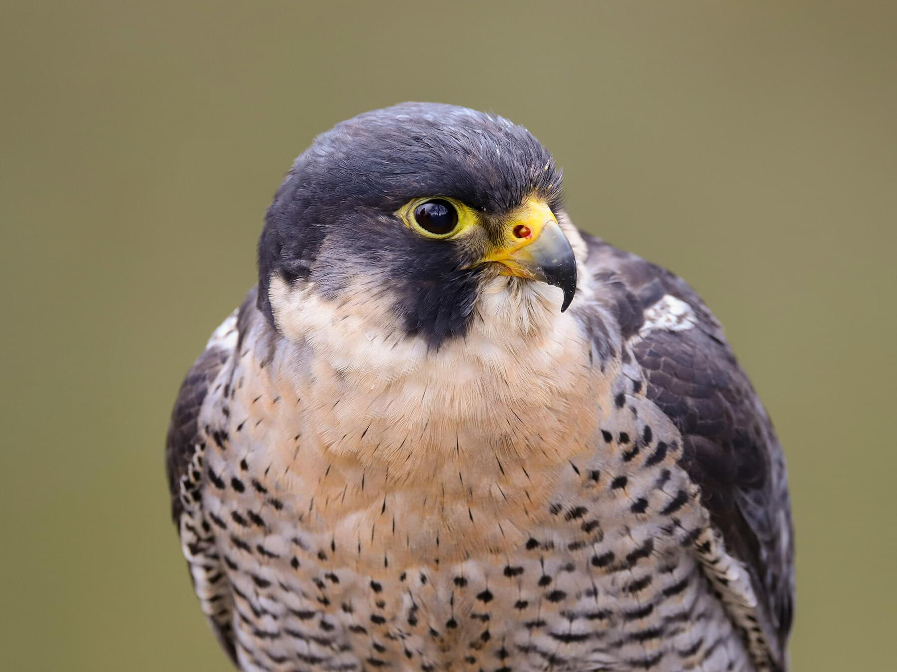
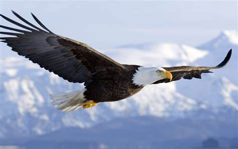
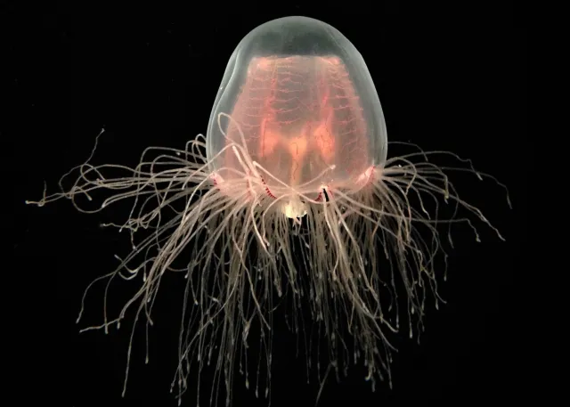
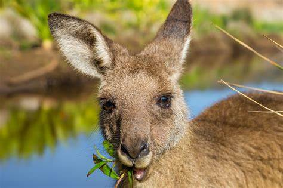
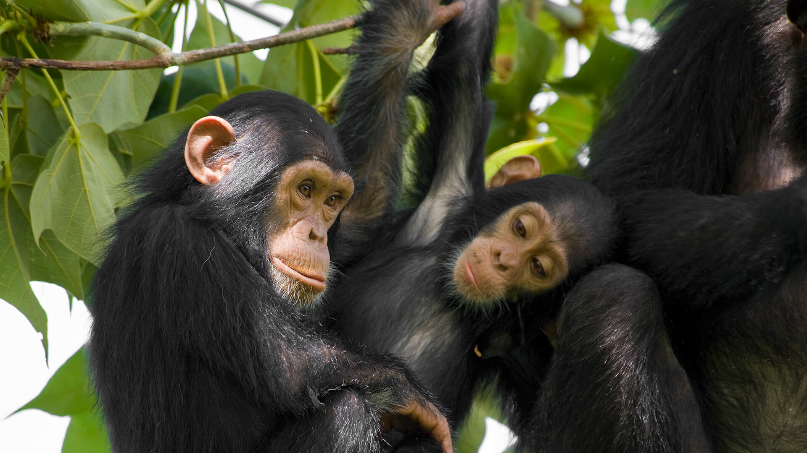
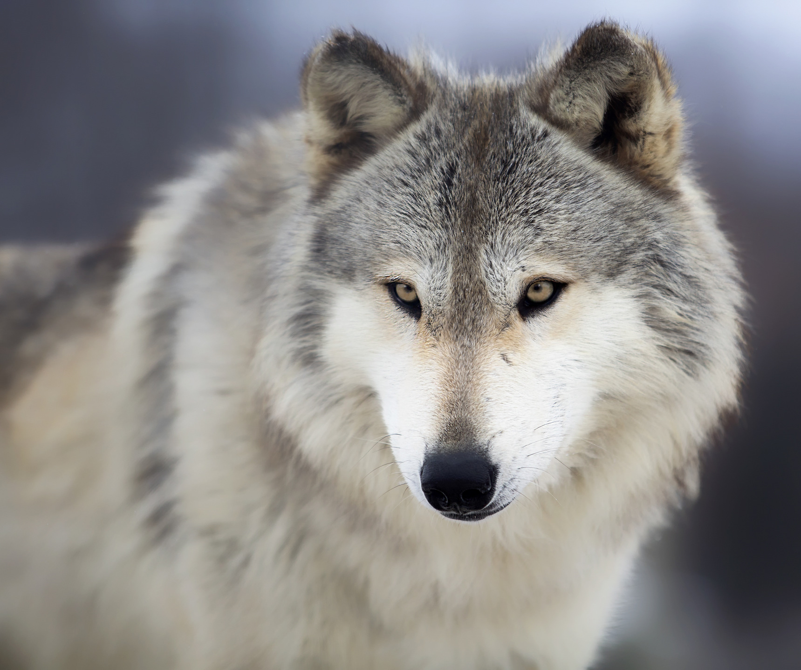
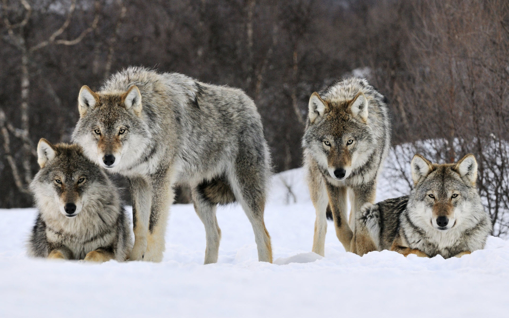
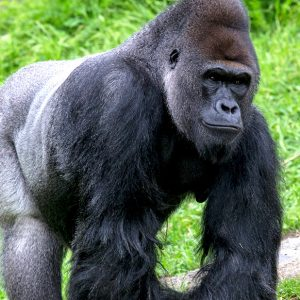

Animals and Characteristics.
Peregrine Falcon


Characteristics
- A cosmopolitan bird of prey in the family Falconidae
- A large, crow-sized falcon with a blue-grey back, barred white underparts, and a black head
- A strong and hooked beak, large and robust legs, compact body, pointed wings, flat head, and long conical tail
- A renowned speed, reaching up to 200 miles per hour in a dive
- A hunter of starlings, pigeons, doves, and other birds in flight
Eagle

Characteristics
- It is a powerful bird of prey with a fully feathered head and strong feet with curved talons
- It subsists mainly on live prey and hunts silently and swiftly
- It has a set vision and is not fearful of challenges
- It is tenacious, high-aiming, and vital
- It never feeds on dead matter and nurtures and mentors its young ones
Immortal Jellyfish

Characteristics
- It can return to a juvenile state when stressed.
- It is almost invisible, resembling an ice cube or glass.
- It is smaller than a pinky nail.
- It has nematocysts, which are stinging cells that can be used to capture prey.
-
It is thought to be immortal due to its ability to revert back to its polyp stage
after reaching sexual maturity.
Kangaroo


Characteristics
- They are large marsupials that are found only in Australia.
- They have muscular tails, strong back legs, large feet, short fur and long, pointed ears.
- They have pouches where their young live until they are old enough to emerge.
- They have specialized teeth for grazing.
- They use hopping as their primary means of locomotion and can leap to long distances and high speeds.
Owl
Characteristics
- Sharp Eyesight
- Disc-Shaped Faces
- Asymmetrical Ears
- Four Toes
- Sharp Talon
raven
Characteristics
- They have a thick neck and shaggy throat feathers.
- They have a blue or purplish iridescence on their feathers.
- They have a strong, large bill and feet.
- They are not very social and usually seen alone or in pairs.
- They are confident, inquisitive, and intelligent birds that can mimic sounds and use tools.
Chimpanzee


Characteristics
- Chimpanzees share 98% of their DNA with humans.
- They have opposable thumbs.
- Ability to communicate their needs.
- They eat meat and plants, but especially fruit.
- Limbs A male chimp can stand up to 5.5 feet.
Wolf


Characteristics
- Large appetite.
- Broad snout.
- Long bushy tail.
- Short ears.
- Long legs designed to travel long distances at great speed.
Gorilla


Characteristics
- They are the largest of the great apes.
- Their stomachs are typically larger than their chests.
- Both skin and hair are black.
- They have stocky physiques with broad chests and shoulders.
- They have large, human-like hands, and small eyes set into hairless faces.
Hippopotamus
Characteristics
- A bulky body on stumpy legs.
- An enormous head.
- Four toes on each foot, each with a nail-like hoof.
- A short tail.
- Wide and open mouth containing large canine tusks.